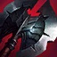

Zed "Der Meister der Schatten"
Informationen über Zed
Zed ist ein Assassinen Champion der auf der Mid-Lane gespielt wird. Er ist ein schwer zu erlernender Champion der viel Erfahrung brauch, damit er nützlich fürs Team ist. In seiner Anfangsphase konzentriert er sich eher auf das Farmen von Versallen und Poken der Gegner. Zed benötigt Energie als Ressource, deshalb kann er mit seinen Fähigkeiten auch gut Farmen, weil die Energie sich schnell wieder auflädt. Mit Zed kann man auch vor Level 6 gut einen Kill machen weil sein Anfangsschaden sehr hoch ist. Wenn er dann Level 6 erreicht hat, bekommt er durch seine Ultimative Fähigkeit "Zeichen des Todes" (Er springt zu einem Gegner, markiert diesen. In der Zeit in der das Ziel markiert ist kann er schaden machen, und wenn die Makierung weg geht wird zusätzlicher Schaden drauf gerechnet, dieser ist jedoch abhägig davon, wie viel Schaden der währen der Markierung des Ziels gemacht hat) genug Schaden um einen Gegner sicher zu töten. Zed hat eine Sehr starke Lanephase, aber dafür Skaliert er nur sehr mittelmäßig im Lategame. Zed ist im moment ein sehr häufig ausgewählter Champion, der eine gutes Potential hat um ein Spiel zu Carrien, aber dafür muss er auch gut gespielt werden.
Wenn mann gegen Zed spielt ist es wichtig darauf zu achten das man nicht so oft von seinen Fähigkeiten getroffen wird, weil diese sehr hohen Schaden anrichten. Wenn man Zed töten möchte ist es vorteilhaft zu warten bis er seine E-Fähigkeit "Lebender Schatten" (Eine Fähigkeit mit der er einen Doppelgänger erzeugen kann der Seine Fähikeiten kopiert und mit ihn die Position tauschen kann) auf Ablingzeit hat, dann kann er nicht mehr so leicht entkommen und es fehlt ihn eine große Schadensquelle. Man sollte Zed auch am besten nicht angreifen wenn man weiß das er seine Ultimative Fähigkeit hat, weil er mit dieser Fähigkeit meisten eine Tötung erziehlen kann.
Was macht Zed so stark?
Zed ist so stark, weil er sehr mobil ist und in kurzer Zeit sehr viel Schaden verusachen kann. Es ist egal ob auf der Lane oder im Teamfight, er kann immer einen Gegner herausnehmen und ihn mit seiner Ultimativen Fähigkeit in sehr kurzer Zeit töten und kommt auch meistens wegen seinem "Lebenden Schatten" schnell wieder raus. Zed kann eigentlich so gut wie immer gespielt werden und ist auch eine sehr gute Wahl. Er ist auch gut gegen Champion die viel leben haben, weil sein Schaden einfach sehr hoch ist und er meistens im späteren Verlauf des Spiel auf einen hohen Wert von Rüstungsdurchdringung kommt.
Wichtige Items auf Zed
 Youmuu's Ghostblade
Youmuu's Ghostblade- Maw of Malmortius
- Mercury's Treads
- Duskblade of Draktharr
- The Black Cleaver
 Guardian Angel
Guardian Angel